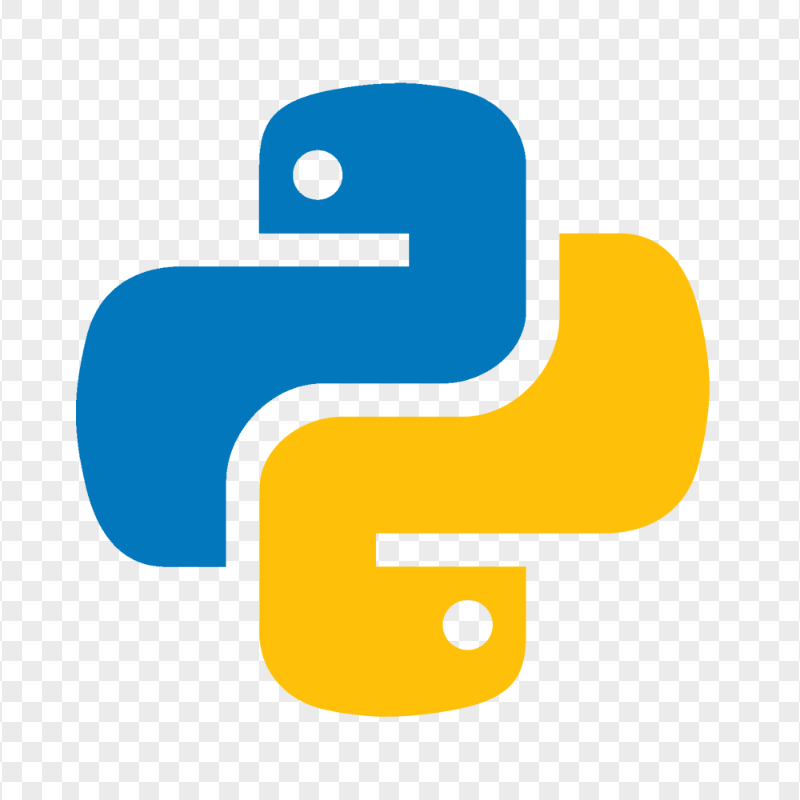
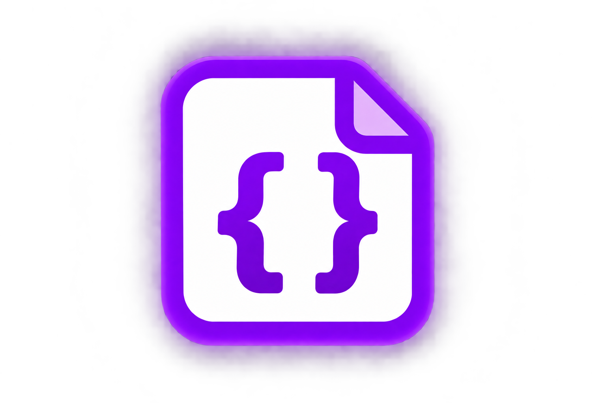

Mon GPT<3 — schéma technique
alpha-0.0.0.1
Mon GPT
AUTONOME
Mon GPT<3
● local
▣ bureau

Tkinter / Tk
SÉPARÉ DES BINAIRES

Catalogue JSON
Fichiers d’interface
Images personnelles
optionnel

ChatGPT
Clique les trois symboles du bas pour isoler une règle de la grammaire visuelle.